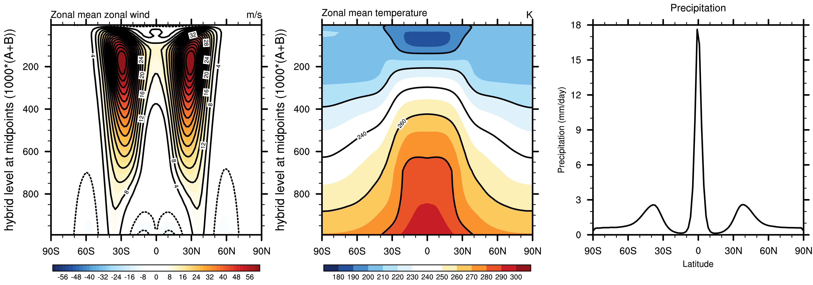
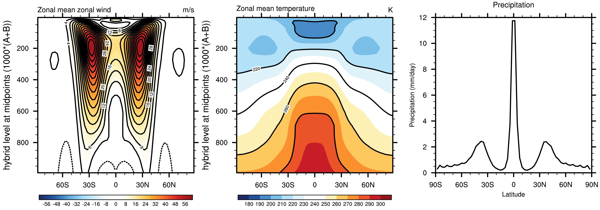

Moist Held-Suarez
Summary
Note, these instructions are only valid for the 2019 CESM2.1 release and subsequent releases. For questions about this configuration please post to the CESM simpler models forum.
This page describes how to run the CAM dynamical core with the CAM physics package replaced by the idealized physics configuration of Thatcher and Jablonowski (2016). This idealized physics configuration is based on the Held-Suarez physics configuration but represents a step-up in complexity through the inclusion of a simple representation of the large scale condensation of moisture and the diabatic heating associated with this process.
The key features of this configuration are as follows:
- The surface boundary condition. The surface is a water-covered Earth with no topography. The default prescribed SST profile is zonally symmetric and depends on latitude following equation (6) of Thatcher and Jablonowski (2016) but can be easily modified (see below).
- Surface fluxes and boundary layer diffusion. The same Rayleigh drag on low level winds as in Held-Suarez is used for the representation of surface stress and boundary layer diffusion of momentum. Unlike Held-Suarez, however, there is a representation of surface sensible and latent heat fluxes following bulk formulae that relate the surface heat and moisture fluxes to wind speed and, in the case of sensible heat flux, the temperature difference between the surface and the lowest model level and, in the case of latent heat flux, the difference between the saturation specific humidity at the surface and the specific humidity on the lowest model level. See equations (7) and (8) of Thatcher and Jablonowski (2016). Evaporation of moisture from the water covered Earth, therefore, provides a source of moisture for the atmosphere. The turbulent mixing of moisture and temperature in the boundary layer are represented by simple diffusive fluxes dependent on the vertical gradient of the relevant quantity (see equations 15-17 of Thatcher and Jablonowski (2016)).
- Radiation. Radiation is idealized in the form of the simple Newtonian relaxation of temperature toward a prescribed zonally symmetric temperature profile. The relaxation temperature profile used in this configuration is slightly modified from that in Held-Suarez (see equation 18 of Thatcher and Jablonowski (2016)).
- Large scale condensation and preciptiation. Moisture is removed from the atmosphere using the large-scale condensation scheme described in Reed and Jablonowski (2012). Condensation occurs when the grid cell reaches saturation. When specific humidity is greater than 100% relative humidity, the moisture is immediately precipitated and removed from the system, resulting in a local moisture and temperature tendency that is proportional to the condensation rate. There is no re-evaporation of the condensate and there are no clouds associated with this process. The precipitation rate output is equal to the sum of the condensation rate over all vertical levels
In summary, while the moist Held-Suarez configuration shares a number of the idealizations present in Held-Suarez, it also includes a representation of the evaporation of moisture from the surface, the transport of moisture by the large scale flow and the condensation/precipitation of moisture and associated diabatic effects. It therefore allows for an idealized representation of the interactions between moisture and the large scale flow.
Running the Moist Held-Suarez configuration
In CESM2.1 and subsequent CESM releases, the moist Held-Suarez configuration can be run using the compset "FTJ16". This compset name refers to the fact that SSTs are prescribed (i.e., this is an F-case by CESM conventions) and it follows the specifications of Thatcher and Jablonowski (2016). The following describes how to set up and run the moist Held-Suarez configuration using a CESM release that is located in the directory $CESM. As with the Held-Suarez configuration, it is recommended that an initial simulation of length 1200 days be performed to ensure the model is set up correctly.
Step 1: Create the moist Held-Suarez case
A moist Held-Suarez simulation can be set up e.g., for the T42 resolution with 30 levels, by executing the following command from the $CESM/cime/scripts directory./create_newcase --case $CASEDIR --compset FTJ16 --res T42z30_T42_mg17 --run-unsupported
Note that the --run-unsupported flag is currently required for all grids in CESM2.1. This may change in subsequent releases
Step 2: Configure the moist Held-Suarez case
The default length of the simulation is 5 days. This can be changed to e.g., 1200 days by executing the following command from within $CASEDIR
./xmlchange STOP_OPTION=ndays,STOP_N=1200
Depending on how the job queue's are set up on the machine being used, it may be necessary to divide the simulation up into separate parts, especially for the higher resolution cases. As an example, to run the simulation in four separate chunks of length 300 days, execute the following xml command from within $CASEDIR
./xmlchange STOP_OPTION=ndays,STOP_N=300,RESUBMIT=3
Step 3: Set-up and Build the case
Set-up and build the case by invoking the following commands from within $CASEDIR
./case.setup
At this point changes can be made to the CAM namelist. For example, by default, the history output is in the form of 30 day averages and each history file will contain 30 such averages. This can be altered by modifying the CAM namelist (user_nl_cam) in $CASEDIR, using the usual CAM conventions. For example, to change the output to be in the form of one 30 day average per file, add the following to user_nl_cam:
mfilt=1
Now build the case
./case.build
Step 4: Run the case
./case.submit
See the CESM users guide for more information on these procedures.
Step 5: Validate the model output
By default, a number of fields are output and these are in the form of 30 day averages. Note that as with the dry Held-Suarez, the variable QRS is the temperature tendency associated with the relaxation toward the equilibrium temperature profile. Here, however, we now have the variable DTCOND which represents the temperature tendency associated with the condensation of moisture as well as other variables related to moisture such as precipitation (PRECL) and the moisture tendency due to physics (PTEQ).
This NCL script can be used to produce the following plots for the average of days 210 to 1200 of the simulation using the 30 day average history fields. It is recommended that users ensure that similar results are obtained with their set-up but note that one may expect small deviations from this due to a different sampling of the natural variability that is inherent to the model.
Figure 1: Zonal mean climatologies for days 210 to 1200 of a simulation using the FTJ16 compset at f19_f19 resolution i.e., an approximately 2 degree simulation with the finite volume dynamical core. (left) zonal mean zonal wind, (middle) zonal mean temperature and (right) zonal mean precipitation.

Figure 2: As Figure 1 but for the resolution T42z30_T42_mg17 resolution

About the default configuration
The default configuration is initialized from the same atmospheric state as the comprehensive version of CAM. Users should find that the climate has evolved toward the moist Held-Suarez state in less than 200 days but it is recommended that this be checked on a case-by-case basis.
Modifying the default configuration
See also the other examples provided for the dry dynamical core
...